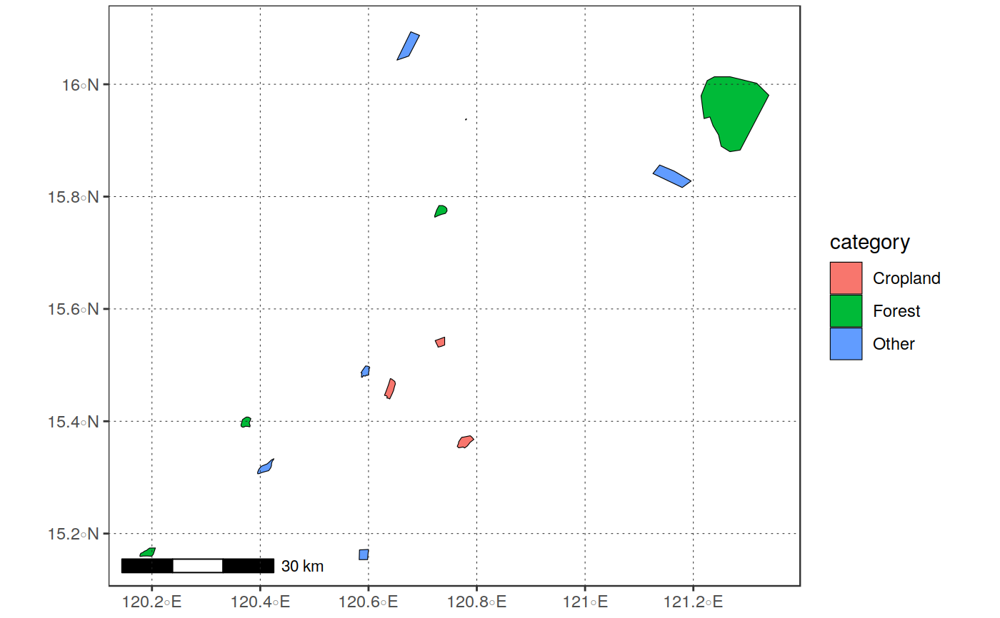

function for easily opening a ESRI shapefile (or other OGR valid vector file by simply specifying its filename
read_vect(in_file, as_sp = FALSE, ...)
Arguments
| in_file |
|
|---|---|
| as_sp |
|
| ... | other arguments to be passed tosf::st_read |
Value
sf or sp object (depending on as_sp setting)
Details
simple wrapper around sf::read_sf, with some checks on inputs and
possibility of automatic re-casting to *sp objects
See also
Examples
library(sprawl.data) # open a shapefile as a `sf` object in_file = system.file("extdata/shapes","lc_polys.shp", package = "sprawl.data") in_vect <- read_vect(in_file) in_vect#> Simple feature collection with 13 features and 4 fields #> geometry type: POLYGON #> dimension: XY #> bbox: xmin: 120.1778 ymin: 15.15353 xmax: 121.3394 ymax: 16.09343 #> epsg (SRID): 4326 #> proj4string: +proj=longlat +datum=WGS84 +no_defs #> # A tibble: 13 x 5 #> id lc_type category sup_catego geometry #> <dbl> <chr> <chr> <chr> <POLYGON [°]> #> 1 1 forest_1 Forest Vegetation ((120.7302 15.784, 120.7369 15.784, 120.… #> 2 2 forest_2 Forest Vegetation ((120.3664 15.39973, 120.3672 15.40287, … #> 3 3 urban_1 Other Other ((120.5941 15.49767, 120.5947 15.4984, 1… #> 4 4 cropland… Cropland Vegetation ((120.6371 15.46567, 120.6403 15.47593, … #> 5 5 cropland… Cropland Vegetation ((120.7231 15.54363, 120.7406 15.54973, … #> 6 6 forest_3 Forest Vegetation ((121.2256 16.00655, 121.2387 16.01331, … #> 7 7 reiver_b… Other Other ((120.4208 15.33119, 120.4253 15.33324, … #> 8 8 cropland… Cropland Vegetation ((120.7702 15.36887, 120.7725 15.37153, … #> 9 9 urban_2_… Other Other ((120.5833 15.17092, 120.5999 15.17177, … #> 10 10 sparsfor… Forest Vegetation ((120.1958 15.17424, 120.2063 15.17437, … #> 11 11 water Other Other ((121.1377 15.85625, 121.1646 15.84538, … #> 12 12 small_fe… Other Other ((120.78 15.93824, 120.7811 15.93814, 12… #> 13 13 out_feat Other Other ((120.6781 16.09343, 120.6942 16.08703, …#>#>in_vect <- reproj_vect(in_vect, "+proj=sinu +lon_0=0 +x_0=0 +y_0=0 +a=6371007.181 +b=6371007.181 +units=m +no_defs")#>#>#>#># open a shapefile as a `sp` object in_file = system.file("extdata/shapes","lc_polys.shp", package = "sprawl.data") read_vect(in_file, as_sp = TRUE)#> class : SpatialPolygonsDataFrame #> features : 13 #> extent : 120.1778, 121.3394, 15.15353, 16.09343 (xmin, xmax, ymin, ymax) #> coord. ref. : +proj=longlat +datum=WGS84 +no_defs +ellps=WGS84 +towgs84=0,0,0 #> variables : 4 #> names : id, lc_type, category, sup_catego #> min values : 1, cropland_1, Cropland, Other #> max values : 13, water, Other, Vegetation